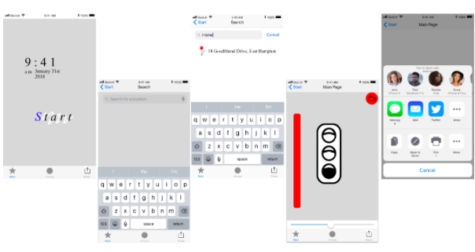

Posted on March, 12 2017 at 2:55PM
aaaaaaaaaaaaaaaaa
The disadvantage I tried to help is color blindness. I realized it would be easier to drive if people are able to use other senses like sound instead of just visuals. This helps drivers with disabilities be more comfortable with driving. The app I designed enables drivers with colorblindness feel more comfortable driving by using sound effects instead of just eye sights and visuals. Using more than one sense can help the driver be more confident to drive. I have developed the app focusing on color blind people. However, I believe it can be used by anybody especially if their sight is not the best. There were many steps to making this prototype. One big thing I kept in mind when I was designing the prototype was to keep the colors mainly on the black and white scale because this prototype was designed for colorblind people. Here is a photo of the overview.  I really enjoyed the part where we developed the app using other applications and websites such as sketch and invision. There were a couple of challenges but designing and choosing what will be on the screen was hard for me. Out of the many things that could be on the screen such as kids crossing signs and gas station signs, I have chosen two main things.
Posted on December 20th 2017 2:28pm
Here is a picture of my desk lamp. My desk lamp uses all 3 kinds of wood 1 type of clay. One feature of my desk lamp is that I can move the "head" of the lamp which means it is able to light a wider range. I personally think I did well for the base. It is hard to understand in the picture but I believe it is sanded and finished very well. Even though other parts are sanded and finished it doesn't feel as well as the base part.
Posted on December 18th 2017 3:34pm
Q) What do sensors do? A) Sensors can detect and measure a lot of things such as temperature, speed and so my more. Q) How did you get informations from the sensor? (E.g. which output did you attach? A) I have attached the output that has LED lights which form numbers. Q) How could this sensor be used in real world? A) Sensors could be used to detect and measure things such as speed, brightness, temperature and many more. Currently, it is used to measure temperature, a distance from a certain place and much more. Q) What is temperature in the iLab right now? How do you know? A) It is 81º Fahrenheit in the iLab room right now which is pretty warm for a temperature in December. I know this because I attached a sensor that measures the temperature to a screen thing that form numbers using LED lights. Q) Find the motion or sound sensor (it may not be at your table) and talk about what it does, how you get information from it, and how it can be used in the real world. A) The sound sensor can detect sound and will take action after it detects sound. The action will depend on what you put after the block.
Posted on December 16th 2017 11:12pm
Q. Which AI experiments did you play? What was the experience like? A. I have tried “quick draw” and “four experiments in handwriting with a neutral network”. I really like “quick draw” because it was actually very fun. If I continue to play the game, I think it will help me improve my drawing skill and the ability to think quickly. Q. What was your experience with creating a digital voice like? What sentence did you have the voice say? How realistic is it? A. It felt very weird. I feel like the digital voice was trying very hard to not end conversation in a good way. It wasn't very realistic because it kept asking questions even if I reply with a 1 word answer. Q. Which chatbot did you choose to create? What was it like training it? Did you ever feel like you were talking to a real person? A. I think they only used proper English which made it feel a little bit weird since the chatbot was in a chatting situation. Q. What questions did you ask the assistants? How were the response similar or different? A. I asked it what time they sleep and they all answered that AI doesn’t really need sleep. Q. What types of problems can be solves with AI? What industries can greatly benefit from AI? A. AI could help students study because everybody learns differently and I believe AI could evolve together with the student as they learn including what kind of questions they are good at and not good at.
Posted on December 8th 2017 1:08pm
As a Immersion Field Trip, we went to the NBC studios and YouTube space.
At the NBC studios, we went on a tour where we could see some places where they would do live stages, we also made a video, and we even saw some things going on real life in front of us. We saw the audio room, the place where director stands, and so much more. We also experienced what an actual shoot looks like by creating an actual video where we pretended to interview olympic medalists. I was doing the camera switches which I found very interesting. More specifically, I was switching through the many cameras that were there by pressing the buttons. Some other roles were lighting, sound, actors.
Here are some pictures we took there. Both of the pictures are from the YouTube space.
Posted on December 1st 2017 3:23pm
Q) Briefly describe the Virry Safari experience including what you saw and your reaction to the experience. Did feel like you were really there? A) It was really interesting because I have never been there. Q) Describe your experience painting in VR. How is it different from drawing or painting in the physical world? What are some advantages and disadvantages creating in VR? How long did it take you to get used to the controls? A) No matter how long I spent, I still feel a little bit weird to paint in VR. I think the painting in the VR is harder than painting in real life. Q) What video did you watch on the Gear VR? What was the experience like? A) The Gear VR was fun to play with because it kind of felt like I was there but not too much. Q)How are 360º photos and videos different from traditional digital media? What are some advantages and disadvantages to using a camera? What is an experience you would want to capture in 360º? A)I think it is better to use a 360º when there is a lot of people or things I would like to capture at once. However, if I am looking for speed to take the picture, I would use a normal camera. Q) What are the differences between Google cardboard, Gear VR and Oculus Rift? How does the ability to use your hands improve the experience? A) I think Google Cardboard is a good way to get started with VR. There, you can get used to it and decide if you actually want the Gear VR or Oculus Rift. However, it is a pain how we have to keep holding the Google Cardboard while watching the VR. On the other hand, the Gear VR and Oculus Rift feels more like you are in a different world. Q)What types of problems can be solves with VR? What industries can greatly benefit from VR (eg. education. enterntainment, health, sports, etc)? A) VR Could help hugely in the area of sports. You could use VR for many ways including improving practices and watching more real time games. With a VR, it is possible to see 360º which will help you realise what you are doing wrong. In real time games, it could make you feel like you are actually there.
Posted on November 17th 2017 1:11pm
Here are some pictures of me working on my Desk Lamp Project and a picture of my progress so far. From this project, I learnt how to use three of the saws to cut wood and the two types of sanding machinese.
These are some desk lamps that I got inspirations from. I got my main structure from this lamp. However, I decided to change the base to more calming and satisfying using two types of wood which are poplar and mahogony. In terms of material, I am using wood mainly and clay as my second material in the head section in small pieces or strips.
I have encountered many challenges mainly because I had almost no woodworking and metal experience even though I had some soldering experience. It took me a while to get used the machines. One thing I learnt was that there are different types of sanding machines, one for breaking down and one for only sanding. The main difference between the two is the direction the sander moves. The typical sanding one will only move in up and down or left and right. On the other hand, the one to break some wood down can rotate and it is able to go in ay direction. It also uses a different type of sanding paper.